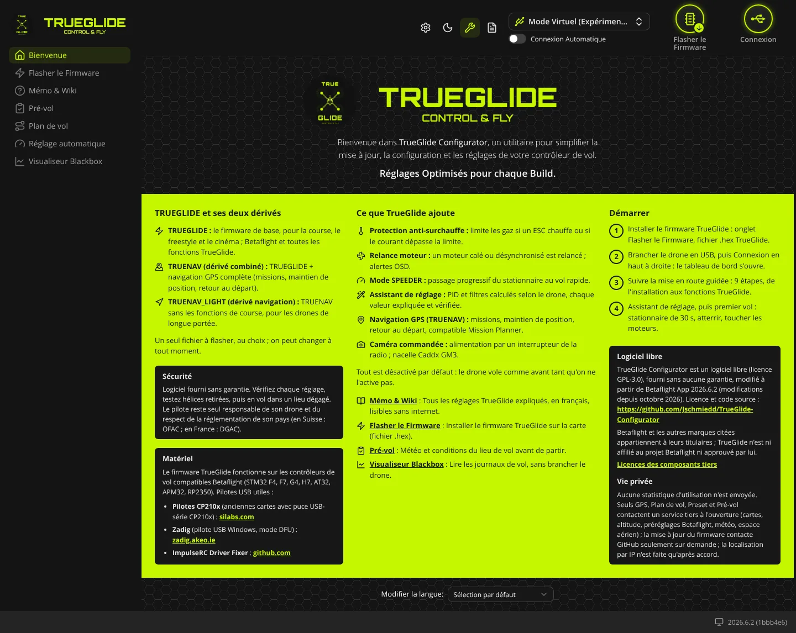
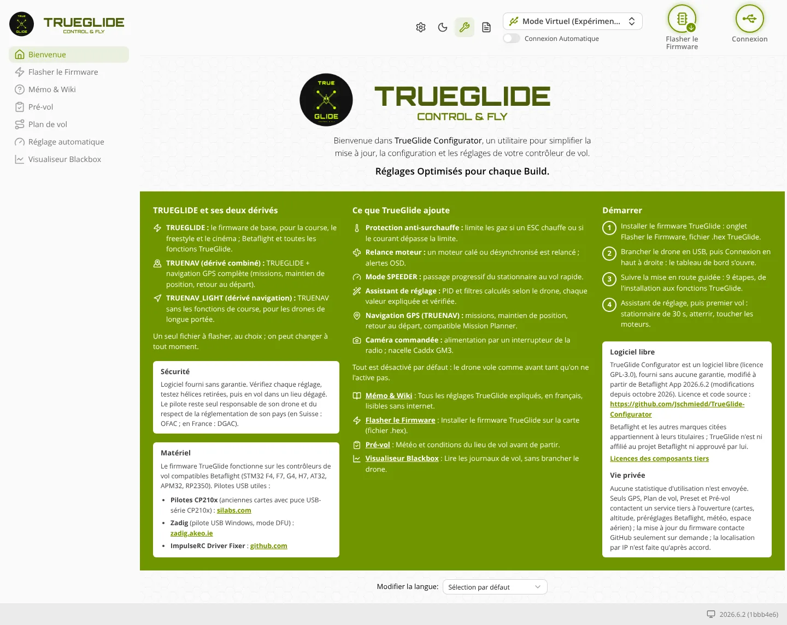

TRUE
TRUEBienvenue
L'onglet Bienvenue (groupe « Sans carte branchée ») est la page d'accueil du logiciel quand aucun drone n'est connecté. Il présente les trois firmwares, ce que TrueGlide ajoute, les quatre étapes pour démarrer et des liens vers les onglets utiles sans carte.


En-tête
Le logo, une phrase d'accueil et la devise « Réglages Optimisés pour chaque Build. ». Rien à régler ici.
TRUEGLIDE et ses deux dérivés
Colonne de gauche, en haut. Elle décrit les trois firmwares :
- TRUEGLIDE : le firmware de base, pour la course, le freestyle et le cinéma.
- TRUENAV (dérivé combiné) : TRUEGLIDE + navigation GPS complète (missions, maintien de position, retour au départ).
- TRUENAV_LIGHT (dérivé navigation) : TRUENAV sans les fonctions de course, pour les drones de longue portée.
Un seul fichier est flashé sur la carte. On peut changer de modèle à tout moment en flashant un autre fichier. Voir Installer le firmware.
Sécurité
Cadre sombre sous les modèles. Il rappelle que le logiciel est fourni sans garantie : vérifier chaque réglage, tester hélices retirées, puis voler dans un lieu dégagé. Le pilote reste seul responsable de son drone et du respect de la réglementation de son pays (en Suisse : OFAC ; en France : DGAC).
Matériel
Le firmware fonctionne sur les contrôleurs de vol compatibles Betaflight (STM32 F4, F7, G4, H7, AT32, APM32, RP2350). Le cadre donne trois liens vers des pilotes USB, utiles surtout sous Windows :
- Pilotes CP210x : pour les anciennes cartes qui ont une puce USB-série CP210x (site silabs.com).
- Zadig : pilote USB Windows pour le mode DFU (site zadig.akeo.ie).
- ImpulseRC Driver Fixer : outil de réparation des pilotes (lien vers github.com).
Ce que TrueGlide ajoute
Colonne du milieu. Une ligne par fonction :
- Protection anti-surchauffe : limite les gaz si un ESC chauffe ou si le courant dépasse la limite. Réglage dans Protections.
- Relance moteur : un moteur calé ou désynchronisé est relancé ; alertes OSD. Réglage dans Protections.
- Mode SPEEDER : passage progressif du stationnaire au vol rapide. Voir Speeder.
- Assistant de réglage : PID et filtres calculés selon le drone. Voir Assistant de réglage.
- Navigation GPS (TRUENAV) : missions, maintien de position, retour au départ. Voir GPS et Plan de vol.
- Caméra commandée : alimentation par un interrupteur de la radio ; nacelle Caddx GM3. Voir Caméra.
Sous la liste : « Tout est désactivé par défaut : le drone vole comme avant tant qu'on ne l'active pas. »
Liens vers les onglets
Quatre liens ouvrent directement un onglet, sans carte branchée :
- Mémo & Wiki : tous les réglages TrueGlide expliqués, en français, lisibles sans Internet. Voir Mémo & Wiki.
- Flasher le Firmware : installer le firmware sur la carte. Voir Flasher le Firmware.
- Pré-vol : météo et conditions du lieu de vol. Voir Pré-vol.
- Visualiseur Blackbox : lire les journaux de vol sans brancher le drone. Voir Visualiseur Blackbox.
Démarrer
Colonne de droite. Les quatre étapes affichées :
- Installer le firmware TrueGlide : onglet Flasher le Firmware, fichier .hex TrueGlide.
- Brancher le drone en USB, puis Connexion en haut à droite : le tableau de bord s'ouvre (voir Tableau de bord).
- Suivre la mise en route guidée : 9 étapes, de l'installation aux fonctions TrueGlide.
- Assistant de réglage, puis premier vol : stationnaire de 30 s, atterrir, toucher les moteurs.
La procédure complète est dans Mise en route.
Logiciel libre et vie privée
- Logiciel libre : licence GPL-3.0, sans aucune garantie, modifié à partir de Betaflight App 2026.6.2. Le lien mène au code source sur GitHub. Le lien Licences des composants tiers ouvre la liste des licences des bibliothèques utilisées.
- Vie privée : aucune statistique d'utilisation n'est envoyée. Seuls les onglets GPS, Plan de vol, Preset et Pré-vol contactent un service tiers à leur ouverture (cartes, altitude, préréglages, météo, espace aérien). La mise à jour du firmware contacte GitHub seulement quand vous cliquez. La localisation par adresse IP n'est faite qu'après votre accord.
Modifier la langue
En bas de la page : la liste Modifier la langue. « Sélection par défaut » suit la langue du navigateur. Le changement s'applique tout de suite.